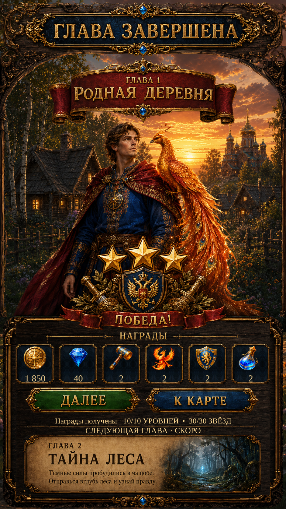

Chapter Complete — R3 scene frame and footer
Fresh Unity captures: original carved side rails restored and repeated footer wood patches replaced with a clean Scenario material. Select one portrait or the reference to review. The reference is never used as the runtime page.

Unity · Russian · 941 × 1672Rewards summarize base first-clear rewards already received. Chapter 2 is a teaser; both actions return to the World Map. Reference sample amounts and unsupported energy/chest rewards are not simulated.
Implementation and checks · Remaining reference differences · Change audit